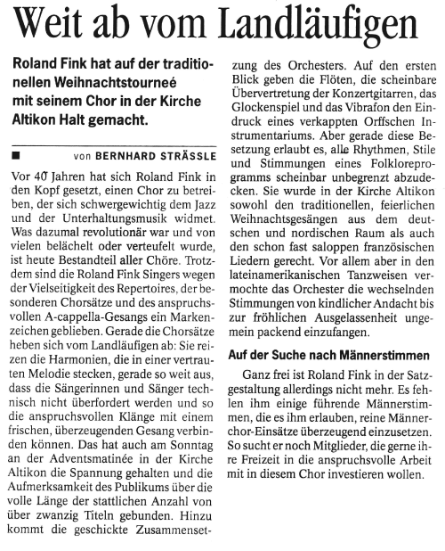
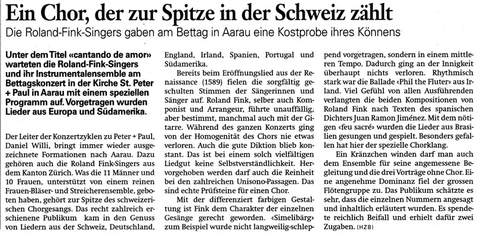
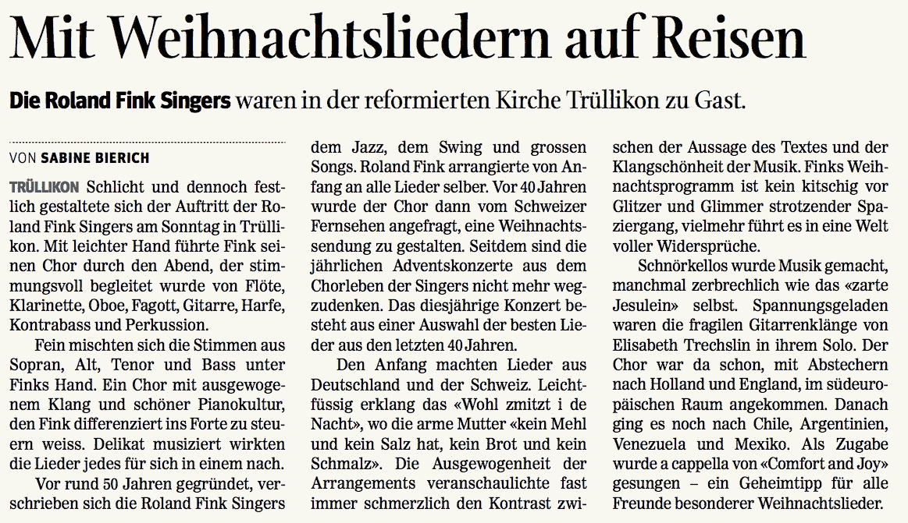
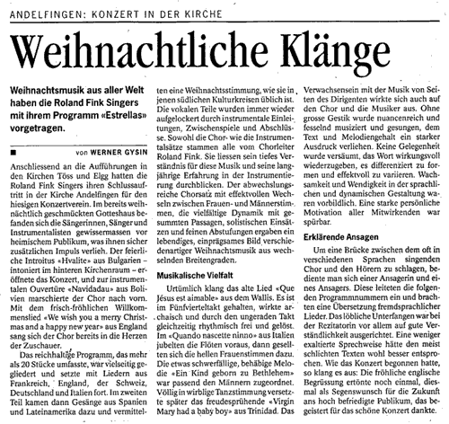
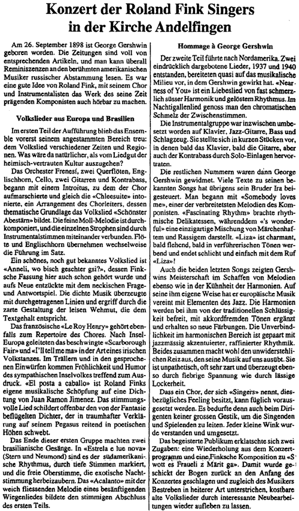

Roland Fink Projekte
Von Roland Fink Singers zu Roland Fink Projekte
Nach 50jährigem Bestehen gaben die «Roland Fink Singers» am 20. Dezember 2015 ihr letztes Konzert. Inzwischen wurde aus dem Chor der Nachfolgeverein «Roland Fink Projekte». Diese Organisation befasst sich mit Konzerten aller Art. In erster Linie sind es Programme mit Chor und Orchester.
Ein solches Projekt wurde im November 2018 durchgeführt, mit je einem Konzert in Effretikon (um 50 Jahre Musikschule Effretikon zu feiern) und in Andelfingen (aus Anlass des 20jährigen Jubiläums des Konzertvereins Andelfingen).
Dabei stellte das Orchester Frenesí die Instrumentalregister und im Chor wirkten ehemalige Roland Fink Singers sowie neue Sängerinnen und Sänger mit.
Das Orchester bestand aus dem Santé-Quartett Winterthur, ergänzt mit Blockflötistinnen und Blockflötisten der Musikschule «Alato» Illnau-Effretikon, Lindau, Dietlikon, Wallisellen sowie der Musikschule Andelfingen und Umgebung.
Zudem waren weitere Musikerinnen und Musiker (Querflöten, Oboe, Klarinette, Bassklarinette, Fagott, Kontrabass, Gitarren, Harfe und Perkussion) mit dabei. Die Leitung hatte Roland Fink.
Wenn Sie bei einem nächsten Projekt gerne dabei wären, können Sie hier mit uns Kontakt aufnehmen.
Ihr/dein Interesse freut uns!
Roland Fink Projekte
Vorstand
Roland Fink Singers
Ein Chor, der immer neue Anstösse gab
Im Mai 1965 gründete Roland Fink mit Kolleginnen und Kollegen aus dem Oberseminar Zürich die Roland Fink Singers.
Er wollte in der Chormusik neue Wege gehen. Ihn reizten weder die Klassik noch die typische Chorliteratur. Sein Chor sollte Jazznummern singen – und Standards, bewährte Stücke populärer Musik. Das erste Lied war «September in the Rain» und wurde im gleichen Jahr am Jazz-Festival Zürich stürmisch beklatscht: Ein Chor, der moderne populäre Musik sang – das gabs in der Schweiz noch nicht.
Seither reisten die Roland Fink Singers um die halbe Welt. Sie waren in vielen Ländern Europas, in Nordamerika, in Brasilien und Australien. Und sie haben die Spartengrenzen der leichten Musik überschritten.
Zu den Jazzmelodien und Standards kamen Schlager, Rocksongs, Western, Shanties, Spirituals, Madrigale, Liebeslieder aus fünf Jahrhunderten, südamerikanische Melodien, Volkslieder und Weihnachtsmusik hinzu.
Roland Fink arrangierte sämtliche Lieder selbst und machte immer wieder Klangexperimente, die auch eine gewiefte Zuhörerschaft zu überraschen vermochten.
Im Dezember 2015, nach fünfzig Jahren, gaben die Roland Fink Singers ihr letztes Konzert.
Sängerinnen und Sänger
Nach dem ersten Auftritt (1965) löste sich der Chor bald auf. Die jungen Lehrerinnen und Lehrer, aus denen er bestand, zerstreuten sich über die ganze Schweiz. Eine Probe pro Woche war für viele zu viel. Roland Fink stockte die wenigen Verbliebenen gleich auf 20 Mitglieder auf. Später baute der Experimentierfreudige den Chor auf bis zu 40 Sängerinnen und Sänger aus, dann liess er ihn wieder auf 16 abmagern. Seit vielen Jahren liegt die ideale Grösse bei rund 25 Mitgliedern.
Lange waren die Mehrheit davon Lehrpersonen. Heute nur noch rund die Hälfte. Und die andern? Sie sind zum Beispiel Sekretärin, Ingenieur, Journalist, Therapeutin, Philosophin, Postangestellte, Hortleiter. Die meisten bleiben sehr lange beim Chor. Am allermeisten Erfahrung hat Katharina Rapp. Die 1945 geborene Winterthurerin ist seit Mai 1965 dabei, seit der allerersten Probe des Chors.
Die Proben
Probe ist einmal in der Woche in Dietlikon ZH. Zweieinhalb Stunden wird geprobt – in lockerer Atmosphäre. Bei den Konzerten hat normalerweise keiner ein Blatt vor der Nase, alle blicken auf den Chorleiter. Die Konzentration ist total, die Präsenz stark, die Präzision gross. Seit Januar 2012 singt erstmals eine Frau im Tenor mit.
Der Chor und sein Umfeld
Manches Chormitglied musste sich früher rechtfertigen, wenn Freunde fragten: «In welchem Chor singst du denn?» und die Antwort lautete: «Wir machen vor allem leichte Musik». Leichte Musik aber hielten viele Zeitgenossen für unseriös. Heute weiss jedermann, dass gute Chormusik nicht zwingend nach Bach oder Mendelssohn klingen muss. Viele andere Chöre haben sich ganz der populären Musik zugewandt oder hängen ihren Konzerten einen «Pop»-Teil an. Die «Roland Fink Singers» bleiben ihrem Stil treu. Oder besser: ihren Stilen. Das ist Musik mit Substanz, Musik, die aber immer auch unterhaltend ist. Darin sind sie stark, und das hört man. Wie die «Roland Fink Singers» ist auch ihr Publikum zusammengesetzt: farbig und aus jeder Altersstufe.
Highlights und Rekorde
Reisen
Die zahlreichen Konzertreisen brachten den «Roland Fink Singers» grossartige Erlebnisse. In einem Kunstgymnasium in Norddeutschland fand der Chor das aufmerksamste, enthusiastischste Publikum. In einer Bündner Berggemeinde hatten die Singers einen bewegenden Auftritt mit dem einheimischen Chor. In Brasilien sangen sie Bossa Novas, und manche Besucher sprangen auf und begannen zu tanzen, einige mit glänzenden Augen. In Polen, kurz vor Ende des Kommunismus, sang der Chor ahnungslos Lulaijze Jezuniu, das emotionalste und berühmteste Weihnachtslied des Landes. Viele Zuhörer und auch einige Chorsänger weinten.
Numerischer Rekord
1975 sang der Chor in Arizona (USA) in der offenen Arena einer Rentnersiedlung vor 8000 rhythmisch klatschenden Zuhörern.
Serienrekorde
40mal trat eine Kleinformation in Zürich als Backgroundchor des Musicals «Hair» auf. Hautnah erlebten sie den damals sensationellen Gag vor der Pause: Unter einem riesigen Tuch zogen sich die Darsteller aus und standen dann nackt da. Die Backgroundsänger aber lernten, wie rasch solche Reize verfliegen.
38mal bestritt eine Abordnung des Chors den Schlussabend einer Europareise für amerikanische Touristen. Man sang das ganze Volkslieder-Repertoire hinauf und hinunter und jodelte sogar ein bisschen.
Lernrekord
Jedes Jahr wird ein Teil des Hunderte von Liedern umfassenden Repertoires ersetzt oder verändert. In Konzerten singen die «Roland Fink Singers» in der Regel auswendig und in den Originalsprachen. Bei Arrangements von Roland Fink gibt es praktisch keine sich wiederholenden Teile – eine tüchtige Herausforderung.
Kälterekord
Ein Adventskonzert in einer ungeheizten Prager Kirche. Einige Sänger klapperten so stark mit den Zähnen, dass sie zu singen aufhörten.
Erfolg im Tierreich
Im Jahre 2007, während einer Probenwoche in Hertenstein, entwickelte sich ein Pfau vor dem Fenster zum Fan des Songs Walking My Baby Back Home. Er begann gurgelnd zu röhren, wann immer die Melodie erklang, und öffnete mit verklärtem Blick sein knallblaues Präsentiergefieder.
Fleischsuppe, Hund als Dirigent
Denkwürdige Auftritte
1975 konnten die «Roland Fink Singers» noch unter Stabführung des letzten Walzerkönigs singen. Rudolf Stolz dirigierte eigene Werke in einer Sendung des österreichischen Fernsehens. Der Chor sang, und anschliessend walzerte er mit Mitgliedern des Wiener Staatsopernballetts. TV-Sendungen in der Schweiz, in Deutschland, Österreich und den USA präsentierten den «swingenden Chor aus Zürich». Moderatoren von Heidi Abel über Toni Sailer bis zu Sepp Trütsch machten Kurzinterviews mit dem Chorleiter. In den Pausen zwischen den Aufnahmen plauderten die Sänger einmal mit Josep Carreras, ein andermal mit dem Trio Eugster.
Fragwürdige Szenen
In einem Hotel traten die Roland Fink neben einem Swimmingpool vor einem Scheich und einigen leicht bekleideten Damen auf. Gut für die Chorkasse – doch man beschloss, solches nicht zu wiederholen. Unüblichster Austrittsort war die (abgeschaltete) Rolltreppe in einem US-Einkaufszentrum.
Oden an Produkte
Ohne es zu wissen, genossen viele Schweizerinnen und Schweizer in den Siebzigerjahren die «Roland Fink Singers» am Bildschirm. Damals wurden sehr viele TV-Werbespots mit Chorgesang untermalt. Und die «Roland Fink Singers» waren der einzige Chor, der immer schnell in der Lage war, eine Dreier- oder Fünferdelegation ins Tonstudio zu schicken. Da standen dann die Sänger und jauchzten: «Knorr Fleischsuppe spezial isch en Gnuss bi jedem Mahl!» oder «Frolic plaît bien au chien, et cela se comprend très très bien!» Dieses Opus ist den Beteiligten noch in froher Erinnerung, weil hier zum ersten und bisher letzten Mal ein Hund den Chor dirigierte: Im schon fertig gedrehten Film wedelte ein Dackel im Cha-cha-cha-Rhythmus, an den sich die Musik anzupassen hatte. Nach vielen gehauchten Oden an Kolagetränke oder Enthaarungssprays wurde es den «Roland Fink Singers» zuviel. Sie wandten sich von dieser Branche ab.
Interview mit dem Chorleiter
Wie würdest du deinen Chor als nüchterner Musikkritiker einschätzen?
Es ist ein guter, ja sehr guter Chor, sicher im oberen Drittel. Keiner mit ausgebildeten Stimmen, das würde anders, vielleicht unpassend klingen. Aber einer, der eine Menge Wissen und Können angesammelt hat. Wir haben Leute, die Jahrzehnte dabei sind. Immer neue «Generationen» von Sängerinnen und Sängern lernen bei ihnen, wie man im Spanischen eine Buchstabenfolge wie «t-a-e-n» auf einer einzigen Note singen kann. Oder den elastischen Swing – den macht uns in der Schweiz nicht so leicht ein Chor nach.
Kann man Swing erlernen?
Wenn man mitten in einem Klangkörper singt, swingt man leichter mit, auch wenn man vorgezogene oder abgebrochene Noten bisher nicht kannte. Swing haben die «Roland Fink Singers» wie ein kollektives Gedächtnis intus.
Also braucht man keine speziellen Sängerqualitäten, wenn man eintreten will?
Man sollte eine gute Stimme haben und entweder gut Noten lesen oder sehr gut nach Gehör singen. Man sollte auch Sinn für Sprachen haben – man muss ja zum Beispiel Texte in brasilianischem Portugiesisch, Polnisch oder Finnisch auswendig lernen.
«September In The Rain» war das einzige Lied, das der Chor konnte, als er 1965 am Zürcher Jazz-Festival auftrat. Das war ja tollkühn! Reisst du gern Dinge an, vor denen andere Angst hätten?
Das kann sein. Ich habe zum Beispiel immer gesagt «Wir kriegen das hin!», wenn es darum ging, eine Tournee durch ein riesiges Land wie Brasilien zu organisieren. Da hätte so viel schief laufen können! Letztlich haben wir es auch immer geschafft, ohne Schulden zu machen. Und waren um unerhörte Erlebnisse reicher.
Eine Familie?
Teilweise schon. Die «Roland Fink Singers» sind eine Gemeinschaft von Menschen, die auch neben der Musik viel miteinander unternehmen.
Und was sagst du zum Thema musikalische Basisdemokratie?
Es ist noch immer so, dass viele fertig gesetzte Lieder still und leise verschwinden, weil ich merke, dass sie beim Chor nicht ankommen, oder dass sie gar lautstark abgelehnt werden. Manchmal finden meine Sänger auch einen kleinen Fehler in einer Partitur. Weiter geht die musikalische Mitbestimmung nicht. Wir sind aber weit demokratischer als andere Chöre: Neue Leute etwa müssen sich beim Singen und menschlich einleben, erst dann sagen Chor und Dirigent ja zu ihnen.
Interview: Peter Trösch
Pressestimmen
Pressestimmen





Roland Fink
Biografie
Bearbeiter, Komponist, Dirigent, Konzertorganisator
- *1937, aufgewachsen in Solothurn
- Kaufmännische Ausbildung in der Baubranche
- 1964 Eidgenössische Matur B auf dem zweiten Bildungsweg
- 1965 Gründer der «Roland Fink Singers», 35 Konzertreisen
- 1966 Zürcher Primarlehrerpatent
- 1968 Gründer der Musikschule Effretikon und deren Leiter bis 1985
- 1971 Konservatorium Winterthur – Abschluss in allen Theoriefächern und Chorleitung (Ernst Hess und Willi Gohl)
- 1975 Gründer des Jugendorchesters «Frenesí», 42 Konzertreisen
- Dezember 2015: letztes Konzert der «Roland Fink Singers»
Roland Fink ist Gründungsmitglied und Präsident des Konzertvereins Andelfingen. Er lebt mit seiner Frau Elisabeth in Alten ZH und ist als Arrangeur, Komponist, Dirigent und Gitarrist tätig.
Roland Finks Werke
Chor
Fink hat in den bald 50 Jahren mit den Singers jedes einzelne Lied für diesen Chor arrangiert. Einzelne seiner Fassungen (zum Beispiel von ihm entstaubte, aber nicht entfremdete Volkslieder) werden auch von anderen Chören gesungen. Seine Spezialproduktionen für Chor, Sprecher und Orchester, «Die Bergpredigt», «Max und Moritz», «A Child's Christmas in Wales», wurden mehrmals mit Erfolg aufgeführt.
Frenesí
Fink gründete dieses Jugendorchester 1975. Instrumente: Flöten aller Art und Herkunft, Gitarren, Streich- und Perkussionsinstrumente. Musikalisch ähnliche Ausrichtung wie die «Roland Fink Singers», mit denen Frenesí oft kooperiert. Insgesamt haben sich bei Frenesí mehr als 700 Jugendliche für Gemeinschaftserlebnisse mit Musik moderner Prägung begeistert. Frenesí hat bisher 45 Konzertreisen unternommen, darunter fünf nach Brasilien, acht nach Nordamerika.
Publikationen
Von Roland Finks Eigenkompositionen und Arrangements im Volksliederbereich sind bei Schott Mainz und im Pan-Verlag Zürich insgesamt 25 Hefte erschienen. Hier gehts zu den Musizierheften.
Märchen
Vertonungen von «Schneeweisschen und Rosenrot», «Der Trommler», «Der goldene Vogel», Max Bolligers «Hirtenlied» (auch in polnischer Fassung für Aufführungen in Warschau 1992), Ivan Gantchevs «Der Mondsee».
Wie Roland Fink komponiert – und wie nicht
Nahklang-Erlebnis
Bei den Jazznummern liegen meist Klaviersätze für eine bis drei Stimmen vor. Nie aber ein fertiger vierstimmiger Satz. Roland Fink bearbeitet die Töne so, dass er den Standard des Komponisten halten oder die Komposition gar aufwerten kann. Es entsteht ein Satz von vier bis acht Stimmen. Oder mehr: Im Schlussakkord von Koffer in Berlin stehen zwölf Stimmen übereinander. Die Zusatztöne können die ursprünglichen Akkorde verändern, den Charakter der Stücke dürfen sie aber nicht verfälschen. «Die Jazz-Akkorde findet man übrigens nicht erst in der Jazz-Zeit», sagt Fink. «Manche wurden schon von Brahms und Schubert verwendet». Die kleine Terz, den Tonsprung, der bei Gershwins The Man I Love die Hauptrolle spielt, gab es gar schon zu Mozarts Zeiten. Wichtigstes Gestaltungsmittel sind für Roland Fink die eng gesetzten Akkorde (Close Harmonies) der 1920er und 1930er Jahre, in denen sich die Töne reiben. Sie prägen das Feeling von Swing und anderen Gattungen.
Die gute Linie
Fink will, dass die Begleitstimmen (Alt, Tenor, Bass) nicht willkürlich herumhüpfen. Jede Stimme soll «eine günstige Stimmführung» erhalten. Bei Eigenkompositionen hört Fink die Musik, wenn er den Text auf sich wirken lässt: «Ich höre Akkorde und schreibe sie auf.» Nachher prüft er sie auf der Gitarre oder am Cembalo.
Soundlabor
Fink experimentiert oft. Vor allem Überleitungen zwischen Strophen geraten ihm manchmal zu kleinen Virtuosenstücken. Bei der Planung von Konzertreihen, etwa für Advent, kann er die Instrumentierung von Null an planen. Da setzt er gern unkonventionelle Akzente: Fulminante Passagen des Riesen-Xylophons «Marimbaphon» mit einer Streichergruppe konnten in Konzerten ganz neue Klangwelten eröffnen. Die wie Steelband-Fässer klingenden Bassblockflöten von 120 cm Höhe lassen, wenn sie mit Swing eingesetzt werden, keinen Gedanken an Blockflöten-Bravheit aufkommen.
Was Roland Fink will
Im Zweifel wählt er den einfacheren Klang. Er drückt nicht auf die Tränendrüsen. Das traurige Simelibärg, bei dem andere Chöre oft künstliche Emotionen produzieren, singen die Roland Fink Singers seit Jahren relativ rasch und wie beiläufig. Die Gefühle kommen trotzdem. Fink schabt falsches Gold und echten Schmutz von den Klängen. Oft genügt ein Handgriff, und ein Stück klingt frisch. Die Roland Fink Singers waren einer der ersten Chöre, die Melodien ohne Texte oder lange gesummte oder auf «Dabadabadaa» gesungene Partien im Repertoire hatten.
Was er nicht will
Fink verabscheut Kommerzmusik mit schäbigen Tricks (etwa mit der Erhöhung um einen Ton gegen Ende des Liedes). Viele neuere Songs bestehen seine Prüfung nicht. Natürlich war Fink auch zuweilen zu puristisch. Es dauerte Jahre, bis er das erste Beatles-Stück adaptierte. Die Gruppe Abba oder der Sänger Prince waren für ihn in einer Weise eigenständig, die ihm nichts sagte. Ein gewisses Mass an Abgehangensein ist schon nötig, um Roland Fink hellhörig zu machen.
Die Musik – weniger bunt, trotzdem farbig
Die «Roland Fink Singers» sangen Musik aus vier Sparten.
Jazz und Standards
Erstens Swing und Bebop (löste den Swing ab etwa 1940 ab, Jazz als Kunstform). Zweitens Standards (bewährte Stücke leichter Musik, die auch jazzig sein können).
Volkslieder
Aus vielen Ländern und Epochen, in Originalsprachen. Oft auch komponierte Stücke, die im Volk tradiert werden.
Advent
Lieder aus Dutzenden von Ländern in Originalsprache, oft durch neu komponierte Zwischenelemente verbunden. Die «Roland Fink Singers» haben auch schon zweimal geografisch fokussierte Weihnachtsmusik präsentiert (Spanien und Wales).
Eigenkompositionen
Roland Fink komponiert eigene Werke in einem Stil zwischen Klassik, Spätromantik, Expressionismus und Jazz.
1989/91: «Die Bergpredigt» (vielsprachige Texte und Lieder)
1996: «Max und Moritz» (Lesung, Lieder und Zeichnungen)
Die Konzerte
Sie bildeten anfangs ein sehr breites Spektrum ab. Man begann zum Beispiel mit einem auf «Dabadabada» gesungenen Renaissancestück und landete nach Volksliedern und Tangos bei einer US-Rocknummer. Später teilte Roland Fink die Genres auf – vor allem, um Probleme mit der Instrumentierung zu vermeiden. Bei Jazz und Standards begleitet heute eine Jazzcombo den Chor, bei Volksmusik ein klassisches Orchester oder ein Spezialensemble, etwa mit Flöten, Streichern, Harfe, Gitarren usw.
Kann man die Roland Fink Singers zu jedem Zeitpunkt für ein Konzert in jedem Genre engagieren?
Die Weihnachtslieder bitte nur zur Adventszeit. Aber im Ernst: Der Chor hat nicht alles jederzeit präsent. Doch kann er innert weniger Wochen oder Monate ein Konzert aus einer der drei ersten Sparten zusammenstellen.
Beispiele zu den Musikgenres
Jazz & Standards
- Fascinating RhythmGeorge Gershwin, Jazz-Standard, der sein Thema (verrückter Rhythmus) gleich vorexerziert
- Moon RiverHenri Mancini, romantische Komposition mit Jazz-Klängen, typischer Standard
- Ghost Riders In The SkyStan Jones, dramatisches, lautmalerisches Westernstück mit Jazzakkorden
Volkslieder
- O du schöner RosengartenLiebeslied mit witzigem Text, musikalisch beinahe ein Choral
- Tanzen und SpringenHans Leo Hassler, 1530–1612, Spätrenaissance mit Barockeinschlag
- Phil The FluterMitreissendes irisches Volksstück. Irische Musik war ein Nährboden für die US-Populärmusik
Advent
- Wohl zmittst i de NachtAnheimelndes zürichdeutsches Lied
- Lulaijze JezunjuDas polnische Weihnachtslied schlechthin
- La serrana de la sierraWild, rhythmisch sehr komplex, aus Spanien
- Navidad españolaRoland Fink, Weihnachtskonzert nach dem Lukas-Evangelium, spanisch
- A Child's Christmas In WalesRoland Fink, Geschichte von Dylan Thomas, mit Erzähler und Orchester, dazu Lieder von den britischen Inseln
Eigenkompositionen
- Die Bergpredigt (1989/91)Gelesen in vier Sprachen, der Chor singt die Schlüsselstellen
- Max und Moritz (1996)Schauspieler liest, Dias zeigen Buschs Bilder, der Chor singt einzelne Szenen
Musik kaufen
CDs und Musizierhefte
Sie können unsere Musik als CD kaufen oder als Notenhefte zum selber Musizieren.
CD bestellen
The Days of Wine and Roses
The days of wine and roses · Walkin' my baby back home · Ain't she sweet? · Ich hab noch einen Koffer in Berlin · In der Nacht ist der Mensch nicht gern alleine · Hymne à l'amour · O Donna Clara · Ain't misbehavin' · I can't give you anything but love · Serenata · Brother, can you spare a dime? · Manhã · All the things you are · Long ago and far away · Yesterdays · Take me back to Colorado · Frenesí · Moon river
CHF 20.–El Cumbanchero
El Cumbanchero · Besame mucho · Cielito lindo · The Breeze and I · Adiós pampa mía · Ay ay ay · Guantanamera · Brazil · Carnavalito · Coconut Woman · Maria Cristina · Perfidia · Me voy pa'l pueblo · El Manisero
CHF 20.–Estrellas (Navidad española)
Auf dem Berge, da wehet der Wind · Ein Kind geborn in Bethlehem · Wohl zmitzt i de Nacht · Que Jésus est aimable · Un flambeau · Quando nascette ninno · See amid the winter's snow · Oggi è nato un bel bambino · Entre le boeuf et l'âne gris · The First Nowell · Noi siamo i tre re · Deck the hall · Acalanto · Cantando vas · Tan, tan, van por el desierto · La estrella venida · Ya viene la vieja · Hvalite imea Gospodne · Corramos, corramos – Adorar al niño · Navidadau · Virgin Mary had a baby boy
CHF 20.–Weihnacht in Europa
Wohl zmitzt i de Nacht · Lieb Nachtigall, wach auf · Auf dem Berge, da wehet der Wind · O Jesulein zart · Un flambeau · Saint Joseph a fait un nid · Fivelgö · Maria die zoude naar Bethlehem gaan · In't stedetje van Nazareth · God rest you, merry gentleman · Hark, the herald angels sing · Lute-book Lullaby · Mizrna, cicha stajenka · Radujcie sie · Lulajze Jezuniu · Mennyböl az angyal · O Gyönyörüszép · Kirje · Dormi, dormi, bel bambino · Bambino divino · Oggi è nato un bel bambino · Señora Doña Maria · La flor de la primavera · Ya viene la vieja · No sé, si será el amor · Una pandereta suena · La serrana de la sierra · Con guitarras y almireces · Manolito
CHF 20.–Anneli
Bumbardung · Anneli, wo bisch geschter gsi? · Pavane Suisse · Altemer Schottisch · Jungfer Käthen-Suite · Es wollt ein Mähderli wandlen · Benkemer Polka · Frisch fröhlich wend wir singen · Es Wälzerli für Dachse · Stets in Truure mues i lebä · Chlee-Suite · Du fragsch mi, wär i bi · Füürthaler Polka · Es wott es Froueli zMärit gah
CHF 20.–Somerset Suite
Somerset Suite · Folkestone Suite · Scarborough Fair · A Baron's Heir · Irish Ladies · The Luck Penny · Music in the Glen · The Pleasures of Home · Banks of Claudy
CHF 20.–Musizierhefte kaufen
Volksmusik aus Flums, Säntis, Ticino, Avenches, Davos, bearbeitet für zwei Melodiestimmen (Flöten, Geigen, Oboe, Akkordeon) und Begleitstimme (Gitarre, Akkordeon). Extra-Ausgabe für Bb-Instrumente.
CHF 28.–Musizierhefte für zwei Geigen, zwei Klarinetten, Querflöte und Geige (oder Klarinette), mit Begleitstimme (Gitarre, Akkordeon, Cello, Fagott, Bassklarinette). Ausgaben in C und in Bb.
CHF 28.–Volksmusikbearbeitungen für zwei Melodiestimmen (Geigen, Klarinetten, Akkordeon, Querflöten, Blockflöten, Oboe, auch gemischt). Begleitstimme für Gitarre, Akkordeon, Fagott, Cello, Kontrabass.
CHF 28.–Volksmusik aus der Sammlung Hanny Christen, für drei Stimmen bearbeitet von Roland Fink.
CHF 22.–Musizierhefte mit Tänzen aus der Sammlung Hanny Christen. Hausmusik für verschiedene Instrumente bearbeitet von Roland Fink.
CHF 22.–Kontakt